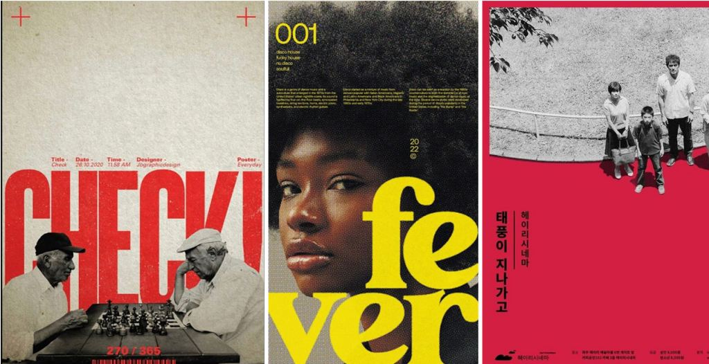
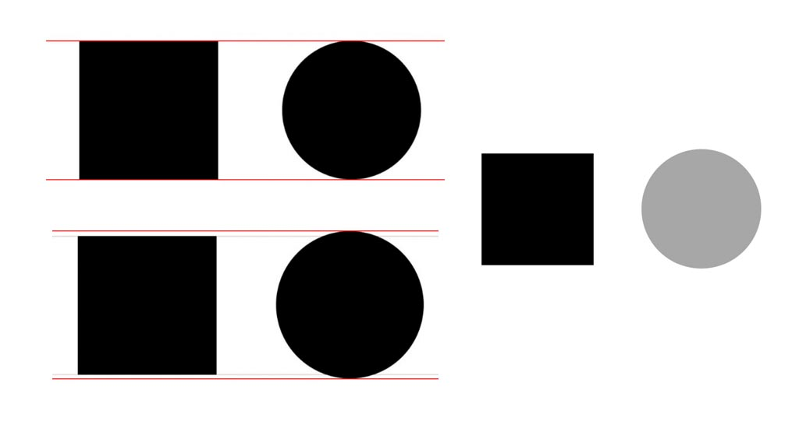
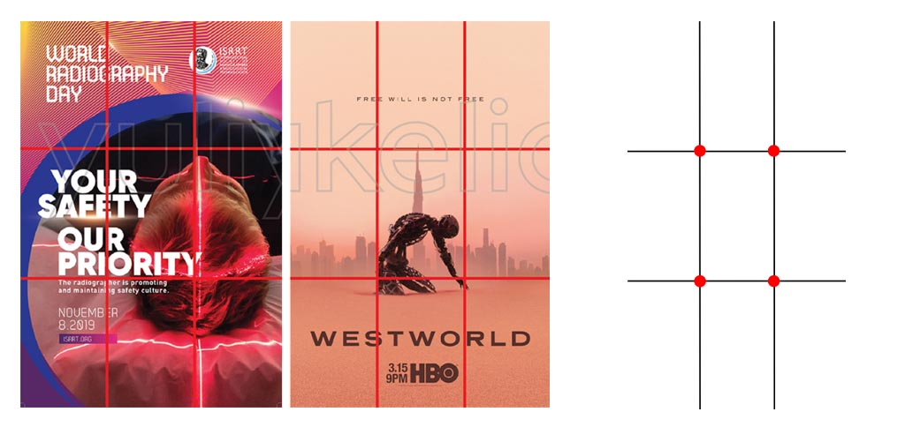
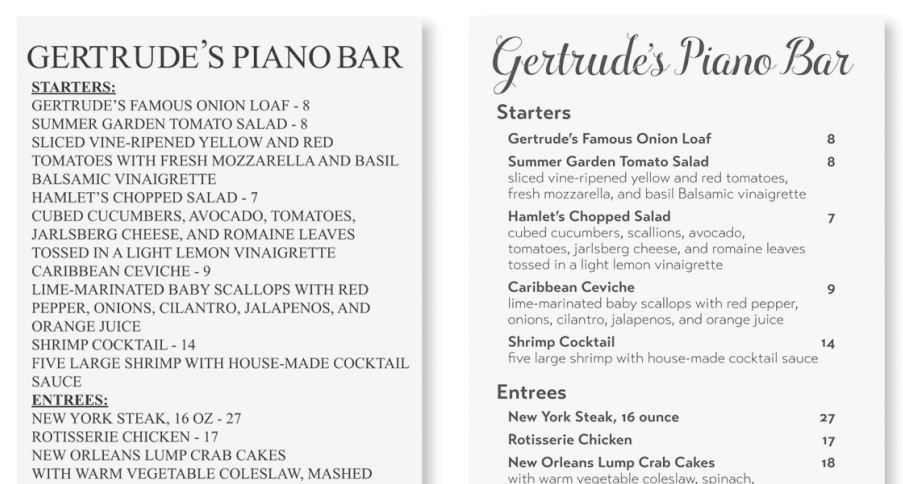
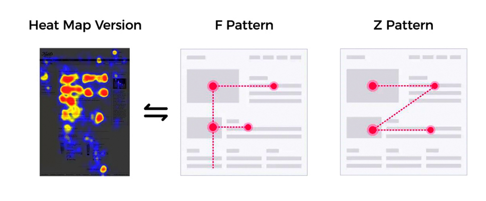
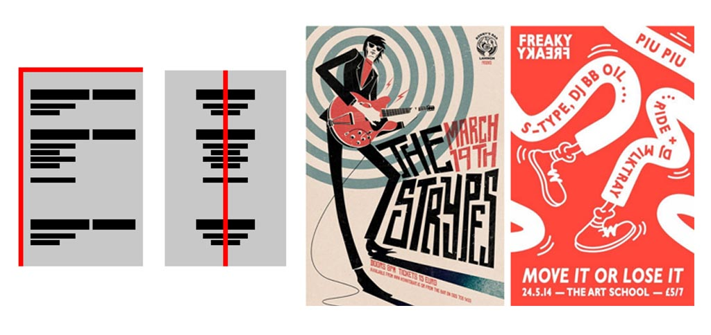
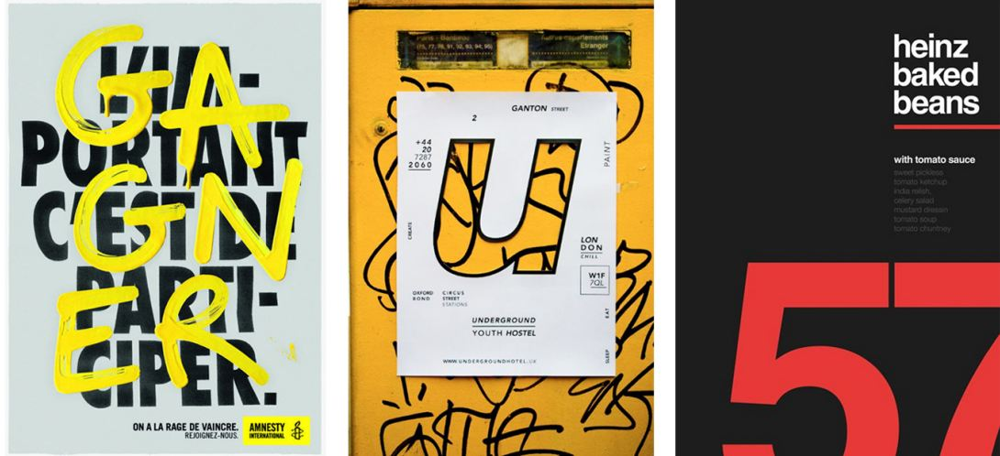
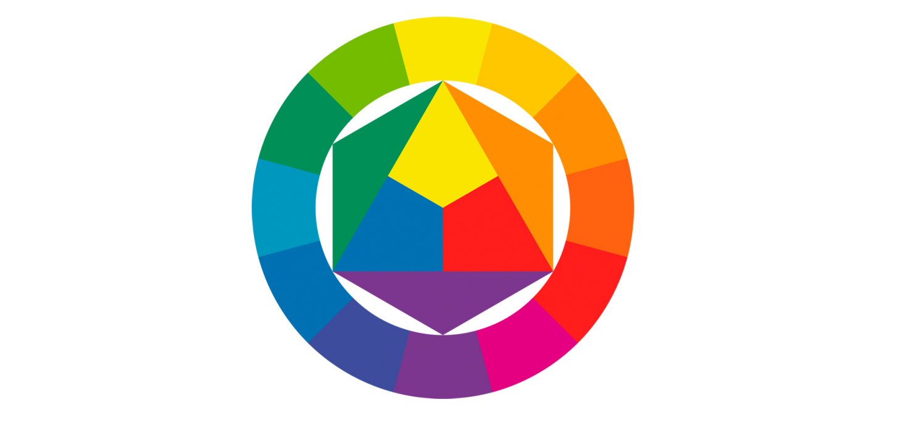
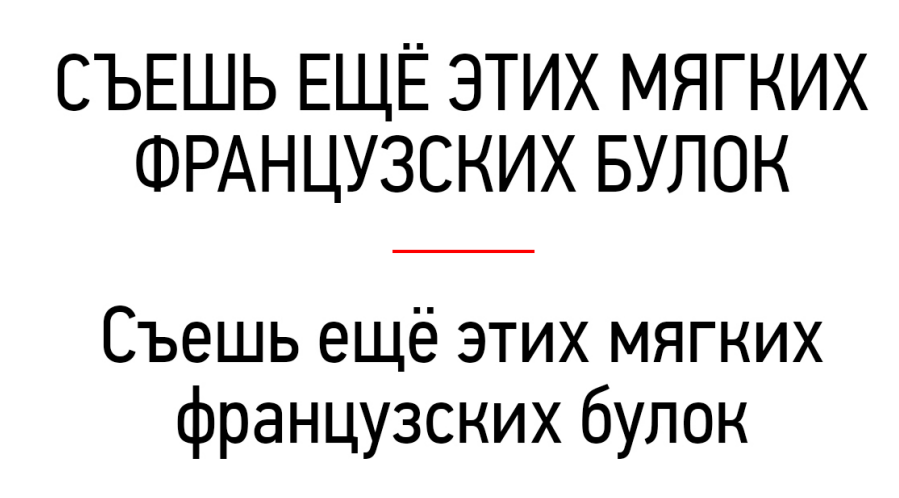

Оптический баланс

Когда-то давно мозг человека адаптировался к гравитации и научился ориентироваться в пространстве, чтобы добывать пропитание. В результате мы получили вестибулярную систему, которая помогает нам быстро определять где верх, низ, находить горизонт. К чему это? К тому, что этот факт нельзя игнорировать в дизайне.
Сознание по умолчанию анализирует изображение и определяет, как гравитация должна влиять на предметы на нем. Если не принимать это во внимание при выстраивании креатива, то есть шанс вызвать у наблюдателя дискомфорт. Он будет ощущать, что что-то тут не так. А вам оно надо?
Основной принцип в оптическом балансе — определение «земли» и «воздуха». Земля — это тяжелые темные элементы, их мы располагаем в нижней части. Небо — более легкие, ставим вверху.

Определить, что есть земля, а что — воздух, довольно просто. Чем темнее и больше элемент, тем он визуально тяжелее, то есть ближе к земле. Но есть нюанс.
Например, квадрат и круг с одинаковыми шириной и высотой будут восприниматься по-разному. Квадрат кажется тяжелее, потому что соприкасается с мысленными границами большей площадью. Получается иллюзия. Чтобы сделать эти объекты равными по весу, круг нужно немного увеличить.
Цвет тоже влияет на вес. Чем темнее, тем тяжелее. Если круг больше, но светлее квадрата, он будет казаться легче.
Правило третей

Все слышали про легендарное золотое сечение, идеал. В дизайне есть его упрощенная версия — правило третей.
Лист делится на три части по горизонтали и три — по вертикали. Получается сетка. Подобную вы могли видеть в камере смартфона. Она нужна, чтобы наиболее выигрышно расположить ключевые элементы на креативе, фотографии и т.д.
Красные точки, узлы, привлекают больше всего внимания, здесь ставим нужный вам акцент.
Две нижние трети для тяжелых элементов (земли), верхняя — для легких (неба). Иногда для неба берут верхние две трети, а для земли оставляют одну нижнюю. Зависит от того, что вы хотите получить. Самые важные элементы лучше размещать на земле ближе к силовым узлам.
Приближенность

Допустим, есть у вас несколько элементов на креативе, они связаны общей темой. Если вы расположите их вместе, то они станут одним большим элементом. Если один из них вы уберете подальше, то он будет восприниматься как самостоятельный. Даже при том, что тема остается общей со всеми остальными. Так работает правило приближенности.
К тексту это тоже применимо. Важна последовательность. Структурируйте пространство, чтобы не теряться и понимать, где начало и конец. Если этого не делать, то получим, опять же, дискомфорт и хаос. Согласитесь, текст справа читать намного легче :)
Паттерны движения глаз

Различные исследования с использованием тепловизоров доказали, что наш взгляд перемещается определенным образом и задерживается на некоторых местах дольше, чем на других. Схемы этого движения называются паттернами.
- F-паттерны чаще встречаются на сайтах. Именно поэтому логотипы располагаются в верхнем левом углу страницы. В этом месте взгляд задерживается дольше всего.
Z-паттерны ближе печатной продукции. Но и в диджитал-проектах они тоже встречаются.
Паттерны нужно использовать, чтобы понимать, где размещать важные элементы. Акценты в виде кнопок, заголовков, изображений и т.д. ставим на узлах.
Выравнивание

В художественной среде есть понятие силовых линий — вертикальных и горизонтальных. Они нужны для связывания элементов макета как визуально, так и мысленно.
Базовое выравнивание:
Слева-направо. Самый простой вариант, так как читаем мы именно в этом направлении.
По центру. Для создания более официального и серьезного настроения.
Справа-налево. Его использовать в работе сложнее всего. Человек скорее всего будет ощущать дискомфорт, смотря на слова и фразы, которые обрываются не там, где он привык. Поэтому такое выравнивание нужно использовать с осторожностью.
Силовые линии могут быть не только прямыми. Зигзаг, круг — все, что угодно станет силовой линией, если есть необходимость. Их можно использовать для усиления элементов.
Контраст

Контраст создает иерархию (да, и тут она) между элементами. Эффективен только явный контраст. Если два элемента различаются недостаточно сильно, то это не контраст, а конфликт.
Что может быть контрастным: шрифт, ширина линий, температура цвета, масштаб изображения и еще много чего другого. Суть в противоположностях. Задача контраста разбавить креатив и привлечь внимание.
Цвет

В начале 1920 года шведский художник и педагог Иоганнес Иттен сформулировал и описал в своей книге цветовой круг. С тех пор этим инструментом пользуются все дизайнеры мира.
В основе цветового круга стоят три первичных цвета: красный, синий и желтый. Остальные образуются от их смешивания.
Существуют разные схемы цветовых кругов, которые были созданы после. Конечно, разбираться в том, для чего каждая из них и как ее использовать, довольно долго. Поэтому советуем вам сайт colorscheme.ru. Используйте его, чтобы быстро подобрать нужные цвета для будущего дизайна :)
Бывает такое, что хочется добавить в креатив градиент. Здесь тоже есть свои правила:
Лучше всего создавать градиент из аналоговых цветов (расположенных ближе всего друг к другу на цветовом круге). Они смешиваются лучше всего.
Противоположные цвета, или комплементарные, плохо подходят для градиента. В месте смешивания они создают некрасивую серую «кашу».
Помним о гравитации. Темные оттенки располагайте ниже светлых и будет вам счастье.
Типографика

Возвращаемся к текстам. Коротко разберем несколько правил форматирования:
Капслок используем только для коротких заголовков. Наш мозг считывает буквы по их верхним граням. Огромный текст, напечатанный капсом, очень сложно читать.
Расстояние между символами в словах должно быть всегда одинаковым.
Последняя строка абзаца не должна быть меньше 7 символов.
Не оставляем в конце строки предлоги меньше 3 символов. Просто перенесите их на следующую строку. А еще желательно, чтобы строки не начинались с одного и того же предлога.
Не используйте больше трех шрифтов. Лучше брать один с разными начертаниями. Так не будет визуального шума. Кстати, шрифты тоже создают контраст: размером, насыщенностью, формой, структурой, направлением и цветом.
Понятная иерархия: заголовок, подзаголовок и текст не должны конфликтовать. Если не знаете, какой размер взять для подзаголовка, то поделите размер заголовка на 1.6.
Кавычки. Елочки («») — это кавычки первого порядка. Они используются всегда. Даже если какой-то капризный шрифт предлагает вам другие. Палочки (“ “) — это кавычки второго порядка. Ставим только внутри елочек при необходимости.
Номер телефона пишем вот так: +7 123 456 78 90; или так: +7 123 456-78-90
А время: 21:00. Всегда используем цифры.
Когда ставить тире, а когда — дефис?
Дефис нужен для соединения частиц одного слова, добавления префиксов, сокращений. Пробелом не отделяется.
Среднее тире только для числового обозначения диапазонов и интервалов чисел и дат. Пробелом тоже не отделяется.
Длинное тире для всего остального. Оно всегда отделяется пробелом.
С сокращениями еще проще: усеченные слова пишем с точкой, физические единицы измерения без точки.
Дизайн— это важная часть проекта. Без качественного оформления сайт не принесет ожидаемых результатов. Поэтому его нельзя недооценивать.
Ну а если вы хотите получить профессиональную разработку сайта «от и до», то обращайтесь в Nuts:)
Автор статьи: дизайнер Анна Приходько